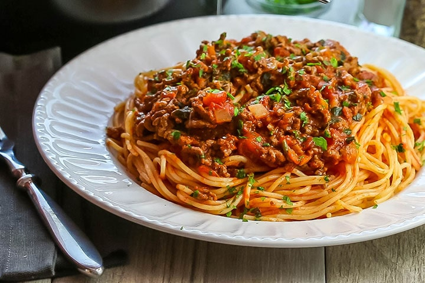

Savoury Mince and Spaghetti

Not a spaghetti bolognese in the true sense, but an easy take on a popular family recipe.
Ingredients
- 300 g lean beef mince
- 1 onion, finely chopped
- 1 clove garlic, crushed
- 1 Tbsp flour
- 2 Tbsp tomato paste
- 1 cup beef stock
- 1 Tbsp Lea & Perrins Worcestershire Sauce
- 420 g can Wattie's Spaghetti
Steps
- Heat a dash of oil in a frying pan and quickly brown the mince. Set mince aside in a separate bowl. Add the onion and garlic tp the pan and cook until the onion starts to soften. Return the mince to the pan.
- Sprinkle over the flour. Stir in the tomato paste. Pour beef stock and Lea & Perrins Worcestershire Sauce over mixture. Bring to the boil. Reduce heat and simmer for 20 minutes, stirring occasionally. Add Wattie's Spaghetti and carefully stir through the mince until heated through. Season to taste.
- Serve with crusty bread.